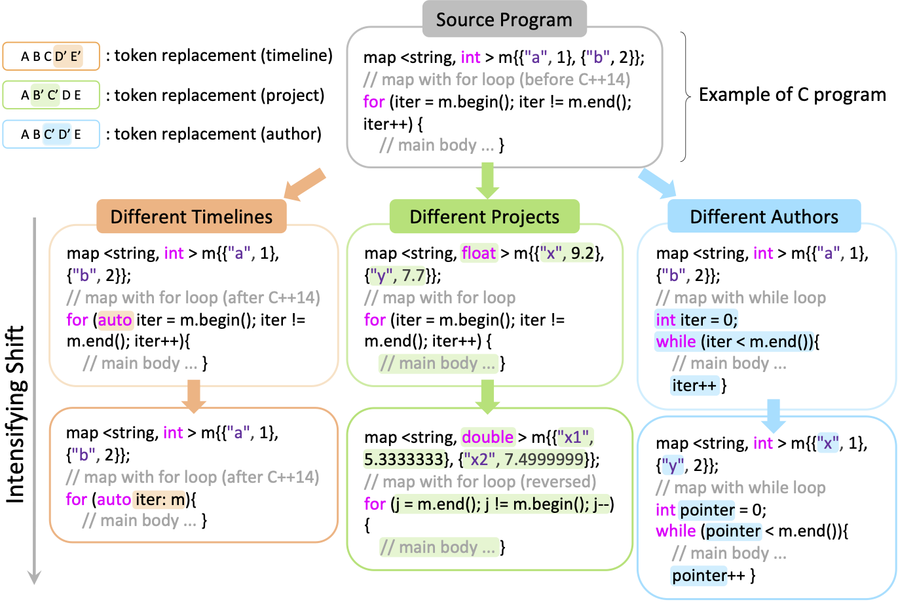
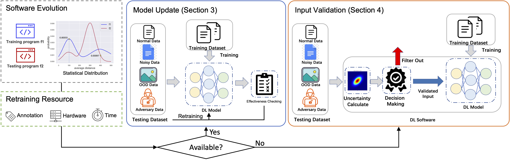
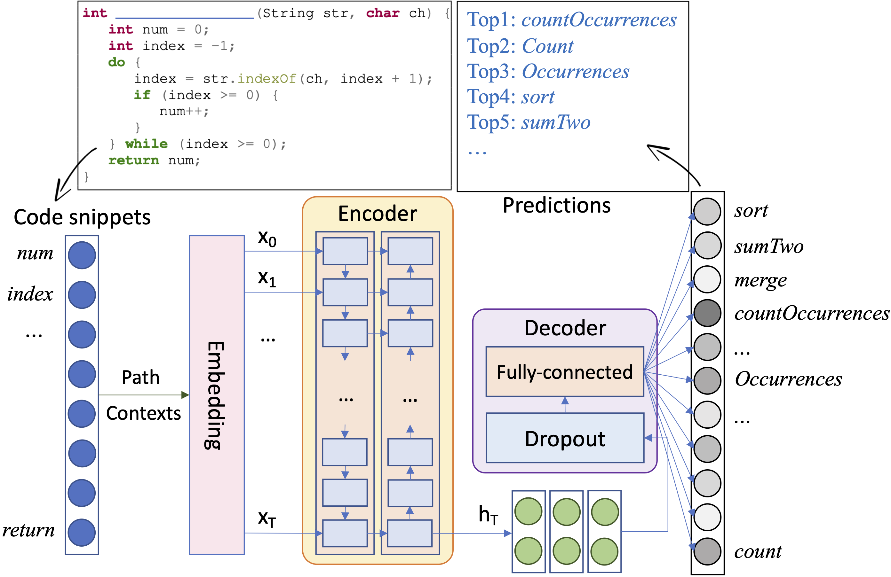
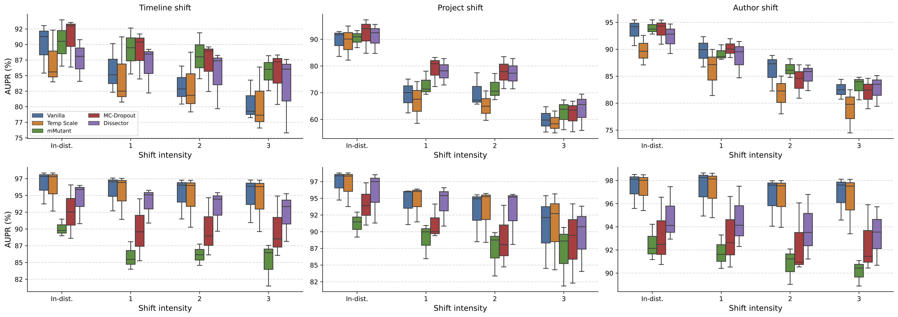

We systematically study the effect of three common real-world code data shifts on DL software performance.
We also investigate the quality of existing state-of-the-art uncertainty approaches in terms of code analysis input validation under data shifts and provide large-scale benchmarks of their performance.
Illustration of three code data shifts:

Study overview

Code analysis architecture

Misclassification prediction (RQ2.1)

h2 id="figures">Misclassification prediction for case study (RQ2.3)